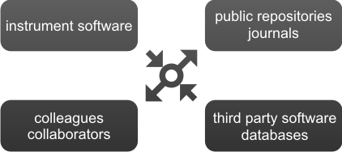

<div id="page">
<div id="center_page">
<p>The Real-time PCR Data Markup Language (RDML) is a structured and universal data standard for exchanging
 quantitative PCR (qPCR) data. The data standard should contain sufficient information to understand the
 experimental setup, re-analyse the data and interpret the results.<br>
 The data standard is a compressed text file in Extensible Markup Language (XML) and enables transparent
 exchange of annotated qPCR data between instrument software and third-party data analysis packages, between
 colleagues and collaborators, and between authors, peer reviewers, journals and readers.</p>
<p>To support the usage of this data standard, both an on-line RDML file generator and file validator are
 available, as well as a reference implementation and file editor software (called RDML-Ninja). Further,
 we are delighted to see acceptance of the data standard by several qPCR instrument providers, as well as
 3rd party software implementations.
</p><br/>
 
</div>
</div>
 <!-- end page div-->

